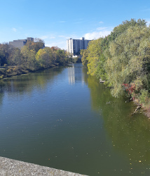

Right before the end of the Fall 2019 reading week, I went on a road trip with some friends to go to Guelph and Toronto. We went up to
Guelph to visit Brianna, a friend of ours, because she was doing her post-secondary education at Guelph, and we hadn't seen her in a while.
The plan began a couple days before the weekend. To ensure we had plenty of time to hang out, we left the Windsor-Essex area early Saturday
morning and planned to come back Sunday evening. Upon arriving at the place Brianna was staying, we were met by Paul, her cousin that she was
staying with, and Bella, his cat. To start things off, we began playing some games and then left for the main area of Guelph and eventually
Toronto, where we walked around and enjoyed the sights and food. The photo I took with my phone included in this section is a view from a bridge
we went across at Guelph. After some time, we went back to her place to spend the night and have dinner. To finish off the night, we watched
a movie for the rest of the night. Satisfied with the movie and our dinner, we went to sleep late to have energy for the next day's activities.
It was now Sunday, and we had a few more things to do before going home. Before leaving and saying our goodbyes, we enjoyed breakfast with Brianna.
We knew we would see each other again in a few months. Next, our group decided to visit one more friend, Nolan, along the way since it was also a while
since we last saw him, and he was presently attending Western for his post-secondary education. We met up with him at his dorm and went to a local mall
to spend the afternoon catching up. After some time, we had to return home. Saying goodbye again, we left the London area for the rest of the drive home
to the Windsor-Essex area. It was a great weekend where we got to catch up with ourselves, make memories, and refresh ourselves before going back to
school.
| Saturday | Sunday |
|---|---|
| Chatham - prep before the long highway drive | London - to go meet with Nolan |
| Guelph - the targest destination | Windsor - back home |
| Toronto - see the sights and food | |
| Back to Guelph - to spend the night |